Use Case Introduction
It is now time to transfer files, but first one last setup step to make the demonstration more visually exciting.
In this demonstration, the FileZilla application will be used. FileZilla is a free and open-source, cross-platform FTP application, consisting of FileZilla Client and FileZilla Server. Clients are available for Windows, Linux, and macOS. Both server and client support FTP and FTPS, while the client can in addition connect to SFTP servers. You can learn more about FileZilla here.
If users do not already have FileZilla installed, do so now. IBM employees can download FileZilla from the Mac@IBM store. For Business Partners and IBMers on Microsoft Windows, the download links are available at the link above.
If users are unable to use FileZilla, it is recommended to use the IBM Sterling File Gateway clients for both users in the scenario that follows. To avoid having to log in and out between user actions, it is recommended to use two different browsers (e.g. Chrome and Firefox) for each user or private/incognito windows for each user when accessing the IBM Sterling File Gateways.
When doing a client demonstration, it is recommended to split the FileZilla and browser windows on the same screen to avoid switching back and forth during the demonstration.
For this scenario, partner1 will use the IBM Sterling File Gateway clients, and partner2 will use FileZilla.
Configure FileZilla for partner2
To configure FileZilla for partner2 both the File Gateway route address and port numbers will be needed.
- Return to the OpenShift web console and click on the sterling-fg-b2bi-asi-internal-route route on the Routes page.

- Select the Host field, right click, and click Copy.
Note, the example below was captured using Firefox on MacOS. Others browser menus options may be labeled differently.
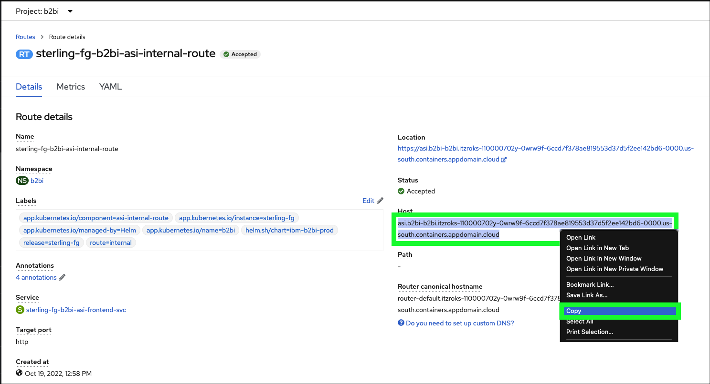
- Open the FileZilla application on local computer.

- Click the FileZilla Site Manager
 icon.
icon.
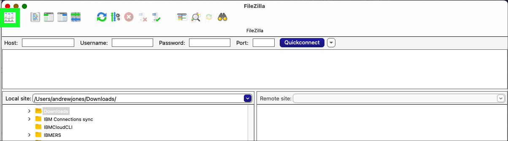
- Click the New site button.

- Enter B2BGateway for the New Site name and press enter.

- Select SFTP - Secure File Transfer Protocol on the Protocol pull-down menu.
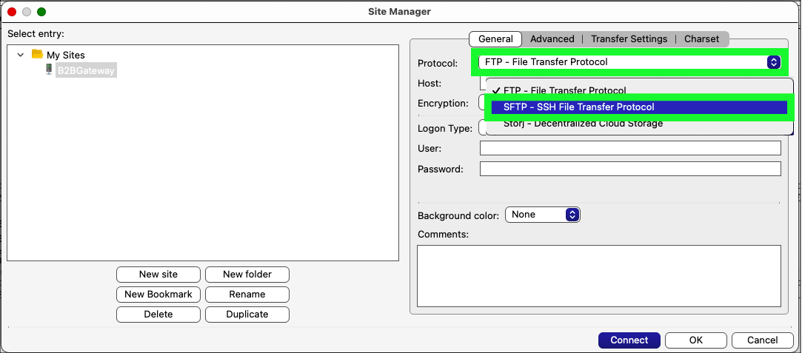
- Paste the route copied in step XXXXXX into the Host field.

- Enter the port number of the sterling-fg-b2bi-asi-backend-svc service in the Port field.

Don't remember the port number?
The port number can be found in the details of the sterling-fg-b2bi-asi-backend-svc service in the OpenShift web console.

- Enter partner2 in the User field and password in the Password field and click the Connect button.

- Check the Always trust this host, add this key to cache checkbox, and click OK on the Unknown host key pop-up window.

- Notice the connection is established and the Remote site shows no files.
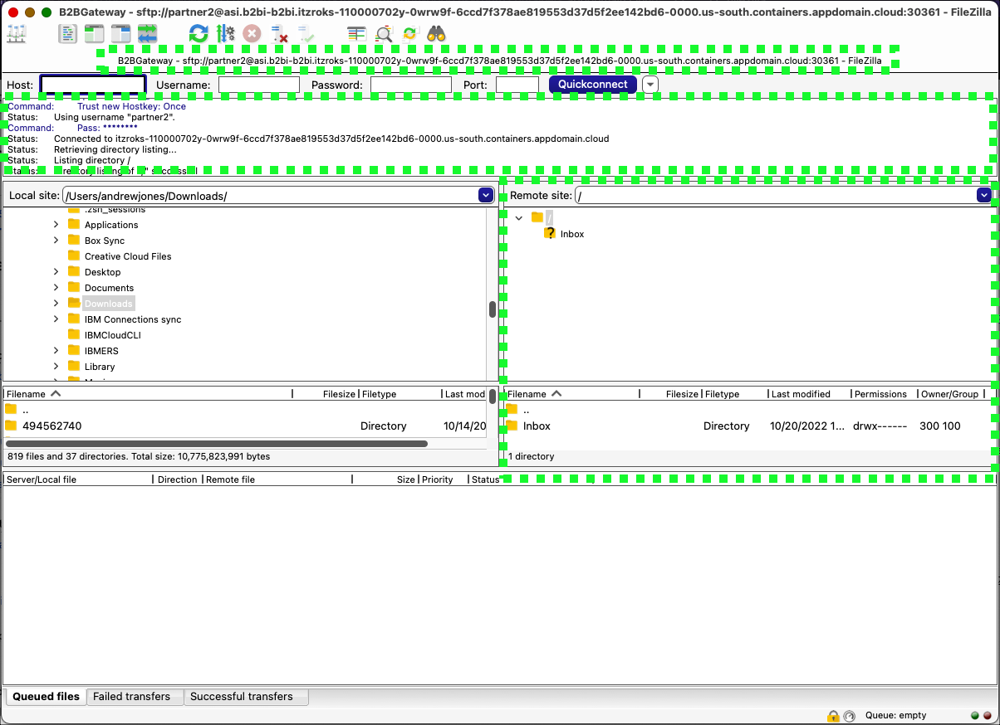
- At this time, it is recommended to have both FileZilla and the OpenShift web console both visible at the same time (either split on a single screen or using multiple monitors).
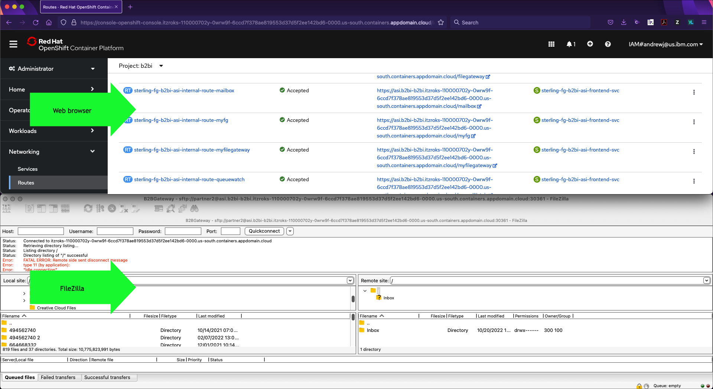
- Next, create or download 2 sample files that will be transferred between partner1 and partner2. Since the templates created earlier allow for any file names to be transferred it does not matter what files are used. It is suggested to use small files so the transfers happen quickly. Feel free to download these two sample invoice files to use. Just right click the links below nd save to the local Downloads directory.
Transfer a file from partner1 to partner2 using the IBM Sterling My File Gateway 2.0
- In the OpenShift web console click the link to open the link to the sterling-fg-b2bi-asi-internal-route-myfg route.
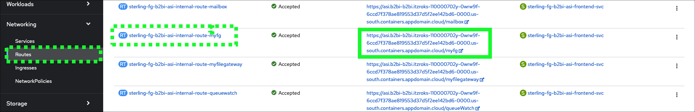
- Enter partner1 in the User name field, password in the Password field, and then click Log in.
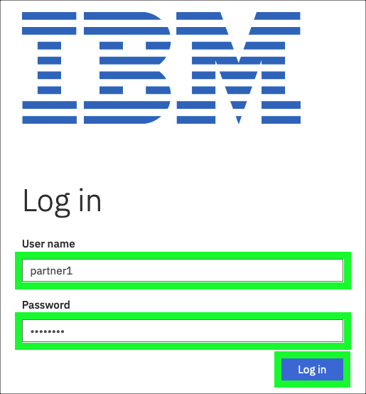
- Click the hamburger menu icon
 at top right and click Uploads.
at top right and click Uploads.
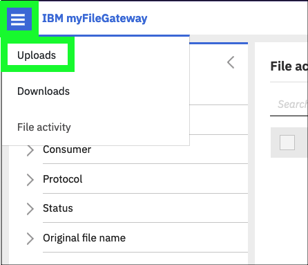
- Click the / directory in left-hand panel.

- Click the select link in the Upload to / panel.

- Click the SampleInvoice1.xml file in the Downloads directory and click Open.
Note
Navigate to the directory where the sample invoice files were downloaded or pick another file to transfer. Do not transfer any file with confidential or personal information. The image above was captured using Firefox on MacOS, other browsers and operating system combinations may look different.

- Verify in the myFileGateway application that the file transferred successfully.
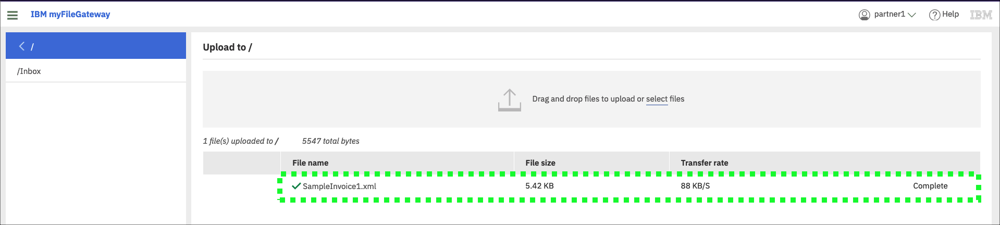
- Verify in FileZilla that partner2 received the file.
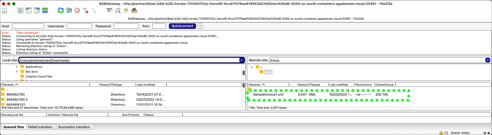
Note
The file size shown in IBM Sterling My File Gateway 2.0 is in kilobytes (KB) and in FileZilla the file size is displayed in bytes, but they are the same and the file transfer was successful.
It is important to realize the file has been transferred to the B2Bi Gateway repository. In a production environment, partner2 would need to download the file. FileZilla is showing the contents of the data store on the gateway that partner2 has permissions to see.
View the details of the file transfer in IBM Sterling My File Gateway 2.0
- Click File activity under the hamburger menu icon .

- Click the link for the recently uploaded file: SampleInvoice1.xml.

- Review the events that occurred during the file transfer.
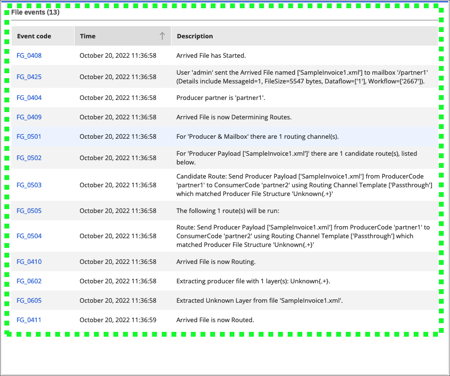
Notice in events FG_0503 and FG_0504 show the Passthrough channel template was used to properly route the transferred file to partner2.
For additional demonstrations, consider the following:
- Transfer a file from partner2 to partner1.
- Verify the file transfers using the IBM Sterling File Gateway application.
- Transfer a file using the older version of IBM Sterling My File Gateway using the sterling-fg-b2bi-asi-internal-route-myfilegateway route found in the OpenShift web console.